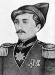
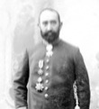
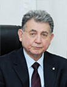

Выдающиеся Люди Баку
Аббасгулу Ага Бакиханов-Историк, поэт, писатель, просветитель, философ, ученый-энциклопедист Аббасгулу Ага Мирза Мухаммед оглы Бакиханов (Кудси) родился 21 июня 1794 года в селе Амирджан, Баку. Последний бакинский хан — сын Мирзы Мухаммад-хана II. В молодости он жил в Губе и получил хорошее образование. В совершенстве знал арабский, персидский и турецкий языки. Выучив русский язык, он устроился переводчиком в канцелярию А. П. Ермолова, наместника Российской империи на Кавказе. Здесь он М.Ш. Познакомился с Вазехом, А. А. Бестуевым-Марлинским, А. С. Грибоедовым, А. Чавчавадзе, затем с поэтом Ю. П. Полонским, польским революционером Т. Л. Заблоцким. В 1828 году он участвовал в русско-иранских мирных переговорах в Туркменчае. Он был полковником царской армии. А. Бакиханов путешествует по России, Латвии, Литве и Польше. В Петербурге знакомится с А. С. Пушкиным. А. Бакиханов занимается как научным творчеством, так и службой. «Тахзибул молак», «Гюлистани Ирам», «Кануни Кудси», «Китаби Аскария», «Асрарул малакут» и другие поэтические рассказы и научно-философские исследования являются произведениями его пера. Исследуя историю феодальных государств, ханств, а также монгольских и туркменских племен и тех, кто правил в этой местности до 1813 г., он написал фундаментальный труд «Гулустани Ирам». Эта работа была высоко оценена российскими и европейскими научными обществами. Большинство научных и публицистических работ Бакиханова носили просветительский характер. В «Китаби Аскарийя», основанной на традиционном любовном сюжете, он выступил против принуждения, карьеризма, жестокости, преобладания устаревших обычаев. В своей сатире «Обращение к народу Тебриза», написанной с обращением к народу Тебриза, он горько смеется над феодальными порядками и фанатизмом. А. Бакиханов известен и как журналист, он редактировал персидский выпуск газеты «Тфлисские ведомости». Я. Он перевел на азербайджанский язык пьесу А. Крылова «Осел и Соловей». Произведения А. Бакиханова переведены на ряд иностранных языков. Аббасгулу Ага Бакиханов награжден орденами России, Турции и других стран. Он умер недалеко от Мекки в 1847 году. Ему установлен памятник в селе Амирджан, где он родился, и его именем назван ряд научных и учебных заведений в селах и городах Азербайджана.
Ага Муса Нагиев-Миллионер, нефтяной предприниматель Ага Муса Нагиев родился в 1848 году (по другим данным, в 1842 году) в селе Биладжары Баку. М. Нагиев - дедушка известного французского писателя Бани (Умбульбану). М. Нагиев в молодости был носильщиком и оказывал транспортные услуги за две-три копейки. Он собирает деньги, покупает участок земли в Балаханах и начинает бурение нефтяной скважины. Старт очень удачный. Он находится в Балаханах, затем в Раманах и Сабунчи. В 1893 году он уже имеет 10-миллионный капитал. Была нефтедобывающая компания «Муса Нагиев». К началу 20 века М. Нагиев уже имел участки в Бибиэйбете, Нафталане и Сураханах. Он управлял нефтеперерабатывающим заводом и механическими мастерскими, обслуживающими нефтяную промышленность. Несколько танкеров, сухогрузы купить. Он построил дом для жены и детей-мусульманок на пересечении улиц Торговой и Марлинского, а для жены-грузинки — на улице Красноводской. Материалы для строительства этих домов привозили из Италии, других городов Европы и России. Эти здания сегодня являются украшением Баку. Муса Нагиев был очень скупым человеком, но занимался и благотворительностью: часть денег он отдал на строительство шоларского водопровода, доведенного до Баку, и построил для народа большую больницу, которая считалась очень хорошей в того времени и до сих пор, и который теперь носит его имя. После установления коммунистического режима в Азербайджане в 1920 году имущество М. Нагиева было национализировано.
Ализаде, сын Акифа Аги Мехти, родился 25 февраля 1934 года в Баку. В 1957 году, после окончания геологоразведочного факультета Азербайджанского индустриального института (ныне Азербайджанский государственный университет нефти и промышленности), он был принят на работу в Геологический институт Академии наук Азербайджана. В 1961 году он стал кандидатом наук, а в 1969 году, в возрасте 35 лет, стал доктором геолого-минералогических наук. В 1970-1976 годах работал заместителем директора Института геологии. С 1976 года - директор института. Его основные научные интересы включают стратиграфию и палеонтологию мелового периода. Под руководством и непосредственным участием ученого были разработаны и подготовлены стратиграфические схемы меловых отложений Азербайджана, богатый палеонтолого-стратиграфический материал, отражающий современные взгляды на геологические процессы, осадконакопление и вулканогенно-осадочные образования, развитие фауны в меловой период и были исследованы и обобщены другие вопросы. Под руководством Акифа Ализаде были составлены и изданы восьмитомники «Геология Азербайджана» и атлас «Полезные ископаемые Азербайджана». В 1980 году Акиф Ализаде был избран членом-корреспондентом Академии наук Азербайджана, а в 1989 году - действительным членом. С 2013 года он является президентом Национальной академии наук Азербайджана. Опубликовано более 250 его научных работ и 9 монографий. Дед Акифа Ализаде, Ага Ахунд Ализаде, дважды избирался шейхуль-исламом Азербайджана - как в Народной Республике, так и в Советском Азербайджане. Ага Сейидали Мир Мовсумзаде (Атага) - дядя Акифа Ализаде по отцовской линии. Его родители Агамехди и Афшан Ализаде были известными азербайджанскими врачами. Старший брат Акифа Ализаде Масуд Ализаде (1932-1968) был первым секретарем ЦК ВЛКСМ Азербайджана. Акиф Ализаде награжден орденами «Знак Почета» (1986 г.), «Слава» (2004 г.), «Честь» (2008 г.), «Истикляль» (2014 г.). В 1991 году ему было присвоено почетное звание заслуженного деятеля науки Азербайджанской Республики и лауреата Государственной премии. В 2014 году избран иностранным членом Российской академии естественных наук.
Узеир бек Абдулгусейн оглы Гаджибеков родился 18 сентября 1885 года в Агджабеди. Его отца зовут Абдул Хусейн Бей, а мать зовут Ширин Бейим Хан. Его отец, Абдулхусейн-бей, был одним из интеллектуалов своего времени, работавшим писцом Рахудбану Натавы. Его мать, госпожа Ширинбейим, была потомком знаменитых Аливердибековых в Карабахе. В семье было три брата и две сестры. Большую роль в формировании музыкальных талантов детей сыграли родители.Узеир Гаджибеков, получивший начальное образование в Шуше, учился в двухлетней русско-турецкой школе. В 1890-1904 годах продолжил образование в Горийской учительской семинарии. В этот период Узеир-бей научился играть на баритоне и скрипке, а также копировать образцы народных песен в ноты. Самые прекрасные воспоминания в жизни Узеир бека связаны с Горийской учительской семинарией. Так, на этом семинаре он познакомился с Муслимом Магомаевым. После окончания семинарии в 1904 году Узеир Гаджибейли начал преподавать в Джебраильском районе, в том же году приехал в Баку и работал переводчиком в газете «Хаят». Это событие считается началом его литературно-публицистической деятельности. Узеир Гаджибеков постоянно работал над дальнейшим развитием в своей области и повышением своего мастерства. Так, в 1911 году для развития своего музыкального образования он уехал в Москву и стал заниматься на частных музыкальных курсах Ильинского. С сожалением отметим, что из-за финансовых трудностей он оставил учебу и вернулся в Баку. Гениальный композитор женился на Малейке Ханум в 1910 году. Его жена была учительницей русского языка. Госпожа Малейка хотела ближе познакомиться с творчеством мужа, поступив на теоретико-музыкальное отделение консерватории. Советская власть всегда обижала интеллигенцию Азербайджана и пыталась затормозить ее развитие. Эти преследования не обошли стороной и Узеир-бея. Хотя композитора и хотели расстрелять в 1920 году, эта угроза была предотвращена в результате стечения обстоятельств. Свою музыкальную карьеру он начал с группы «Не кот» ребро, а в 1914 году ребро продолжилось вместе с присоединившимися к нему снежными камнями в Тетр Фронт. После мартовского геноцида 1918 года Узеир-бек вместе с Туруппаси отправился в Иран и готовил там выступления, а 15 сентября 1918 года вернулся в Баку. Композитор, работая публицистом-редактором и культурным деятелем в газете «Азербайджан», по мере сил старался помочь национально-государственному строительству. Именно в этот период он написал Государственный гимн. В 20-е и 30-е годы 20 века Узеир Гаджибеков был известен не только в Азербайджане, но и в СССР и западном мире. Написание различных произведений в музыкальном жанре, особенно оперы «Кероглу» в 1932-37 годах, сделало его еще более известным. Благодаря этому произведению композитор освобождается от репрессий. Его мать, госпожа Ширинбейим Гаджибекова-Аливердибекова, родилась в 1853 году в помещичьей семье. В семье было 12 детей: четыре брата, восемь сестер. Все мальчики получили прекрасное образование, а девочки обучались дома. Госпожа Ширинбейим любит литературу, читает стихи, знала наизусть произведения Физули. В 1870 году он женился на Абдулгусейне и имел пятерых детей: Саяд, Абухаят, Зульфугар, Узеир, Джейхун. Последние годы своей жизни он провел в Баку, в доме своего сына Узеира. Он умер в 1939 году. Его отец, Мирза Абдулгусейн бек Гаджибеков, родился в 1840 году в городе Шуша. Получил медресе образование. Мирза Абдулгусейн бек Гаджибеков умер в 1901 году. Его дядя Гара бек Аливердили является депутатом парламента Азербайджанской Демократической Республики. Г-жа Малейка Терегулова-Гаджибейли — сестра Ханафи Терегулова, Малейка Гаджибейли, училась в женской гимназии в Тбилиси и работала учительницей. Г-н Узеир и г-жа Малейка поженились 20 декабря 1909 года. Но пара не может иметь детей. Узеир Гаджибеков также помог своей жене Малейке поступить в консерваторию. Г-жа Малейка также предложила мужу жениться на другой женщине и родить ребенка. Однако предложение не было принято композитором. Выйдя замуж за Узеир бека Гаджибекова, она переехала в Баку. Преподавательскую деятельность продолжил в Баку, после основания консерватории в Азербайджане поступил в этот вуз по совету г-на Узеира. Пара, прожившая в Баку 6 лет, позже переехала в квартиру, которая в настоящее время функционирует как дом-музей в 1915 году. Малейка ханум Терегулова была татаркой по национальности. После смерти Малейка ханум Узеира Гаджибекова (1948) в Баку была издана фортепианная музыкальная комедия «Аршин мал алан», а в Москве была издана и выпущена фортепианная опера «Кероглу». Малейка Гаджибейли умерла в 1966 году. Слева от могилы Узеир-бека находится могила его жены Малейки-ханум.[34] После получения высшего образования Гаджибеков жил в Баку с женой и матерью, при этом заботясь о пятерых детях сестры[35], своих детей у него не было[36]. Невестка Бадигулжамал Теругулова была женой Муслима Магомаева. Его брат Джейхун Гаджибейли эмигрировал во Францию. Братья поддерживали связь друг с другом через своих сестер и других родственников.[35] До постановки оперы «Кероглу» композитору постоянно угрожали арестом и возможными репрессиями[35], но после торжественной постановки «Кероглу» в столице СССР в 1938 году автору было присвоено звание Народного артиста СССР. СССР и орденом Ленина, был избран депутатом Верховного Совета СССР.
СЕМЕД ВУРГУН Это стихотворение посвящено смерти Узеира Гаджибекова.
Стихотворение
КРЫЛЬЯ СТАРОГО ОРЛА ОСТАНОВИЛИСЬ
ОН БОЛЬШЕ НЕ ПОЕДЕТ ЧЕРЕЗ ГОРЫ
МИР НА СВОЕМ МЕСТЕ, УТРО СНОВА ПРОСЫПАЕТСЯ
ОН НЕ БУДЕТ ПИТЬ ИЗ ВОДЫ ГОР РОДИНЫ
ПУСТЬ СМЕРТЬ РАДУЕТСЯ ЖИЗНИ НЕ ДАЕТ БАДА
ТЕ, КТО ЗНАЕТ ЭЛЬ-КАДРИ КАК ДОРОЖЕ СВОЕЙ ДУШИ
СЛАДКОЕ ЧУДО ОСТАНЕТСЯ В МИРЕ
Те, кто живут в любви, умирают в любви
ВОТ ПОСМОТРИТЕ НА МОЕ ЛИЦО ГЛАЗАМИ ХУДОЖНИКА
ОПЯТЬ СМЕХ, РАЗГОВОР, ДЫХАНИЕ, ПЛАВАНИЕ
ЕГО ОГНЕННОЕ СЛОВО НАПОЛНЯЕТ МОЕ СЕРДЦЕ ДОМ
ТЫСЯЧА СТИХОВ РАСПРОСТРАНИЛИСЬ ОТ ГОЛОСА МАСТЕРА
ОН ПРОЙДЕТ С НАМИ ТОЖЕ УТРОМ
ПОЕМ ИЗ КОРОГЛУ, МЫ СНОВА АРМИЯ ПОБЕДЫ
ОДИН БРАТ ПОЭМЫ ЭЙ ФЮЗУЛИ ПО КОМПОЗИТОРУ
НАША РОДИНА ПРОСЛАВАЛАСЬ С ВАШИМ ИМЕНЕМ
Я ПИШУ ЭТО СТИХОТВОРЕНИЕ СО СЛЕЗАМИ
ПОТОМУ ЧТО Я ПРОЩАЮ С МОИМ КОНФИДЕНЦИАЛЬНЫМ СЕРДЦЕМ